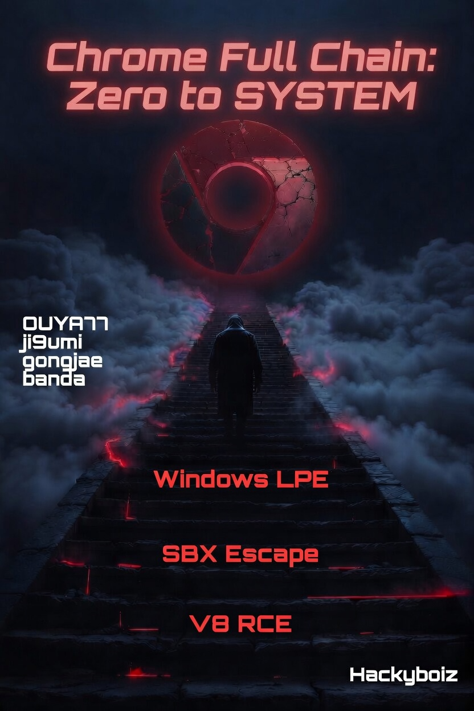

[Wipeload Step 4.] Chrome's Self-Imposed Prison: Understanding the Sandbox (EN)
Hello, this is OUYA77.
In this fourth installment of the WipeLoad research series, we’ll explore one of Chrome’s most important security mechanisms: the Chrome Sandbox.

Previous posts
https://hackyboiz.github.io/2026/06/06/OUYA77/Wipeload_step1/en/
https://hackyboiz.github.io/2026/06/21/ji9umi/Wipeload_step2/en/
https://hackyboiz.github.io/2026/06/26/ji9umi/Wipeload_step3/en/
In Parts 2 and 3, ji9umi explained how to achieve RCE inside Chrome’s renderer process. In most applications, obtaining RCE inside a process effectively means obtaining user-level code execution, since the compromised process inherits the privileges of the current user.
Chrome, however, was designed with a different assumption.
In this post, we’ll take a closer look at how that sandbox is built, how it works, and why escaping it is far more difficult than simply achieving Renderer RCE.
Let’s Dive in!!! 🏄♂️
1. Chrome Sandbox Overview
As we’ve discussed throughout this series, Chrome adopts a multi-process architecture. More importantly, it does not trust the renderer process by design. This stems from the fundamental nature of a web browser—it must execute arbitrary JavaScript received from untrusted websites.

Tai Lung (Renderer): “Why isolate me?”
Shifu (Browser):“Because you execute untrusted JS.”
In the traditional single-process browser architecture, compromising the renderer effectively meant compromising the entire browser. But Chrome addresses this problem by introducing a strict Broker/Target model.
Security-sensitive operations are delegated exclusively to the Broker (the browser process), while the Target (the renderer process) is confined inside a heavily restricted sandbox.
Within this architecture, the renderer process is confined inside the sandbox—the final line of isolation between untrusted code and the operating system.

Chrome’s philosophy can be summarized in a single sentence:
“Compromise is expected. Escape is not.”
Under this philosophy, Chrome strips the renderer of unnecessary privileges using a Restricted Token, constrains its behavior through Job Objects, and isolates it from operating system resources with AppContainer and Integrity Levels.
The renderer is therefore reduced to doing nothing more than quietly minding its own business—parsing HTML, executing JavaScript, and rendering web pages from inside its prison. Even a fully compromised renderer cannot directly threaten the rest of the operating system without first escaping the sandbox.
I found an excellent figure in the paper, so I’ve included it here.

To better understand how this works, let’s walk through a typical rendering pipeline. The Browser(or Network) process first retrieves HTML, CSS, JavaScript, and other web resources from the network or the local file system. These resources are then delivered to the renderer as input.
Inside the renderer, Blink parses the document while V8 executes the JavaScript, ultimately producing rendering results in the form of Compositor Frames.
However, despite generating the rendering output, the renderer is not allowed to display anything on the screen directly. Instead, it sends an IPC request to the Browser (Broker) process:
“I’ve finished rendering this frame. Please display it for me.”
The Browser process, together with the GPU process, is responsible for presenting the final image on the screen.
This separation is a fundamental principle of Chrome’s security model. The renderer performs computation, while privileged processes interact with the operating system on its behalf.
Beyond this architectural separation, Chrome also relies heavily on operating system security mechanisms to enforce the sandbox. On Linux, the renderer is constrained using technologies such as Seccomp. On Windows, Chrome combines multiple security mechanisms, including:
- Restricted Token — removes unnecessary privileges and assigns an Untrusted Integrity Level
- AppContainer (LPAC) — isolates access to operating system resources
- Job Objects — restrict process capabilities and behavior
- Desktop / Window Station Isolation — prevents interaction with the graphical desktop
As a result, privileged operation must be performed by the Browser process rather than the renderer itself.
The effect of these security mechanisms can be observed directly by visiting chrome://sandbox.

The first thing that stands out is the security level assigned to different process types. Renderer and Utility processes handle untrusted inputs such as HTML, JavaScript, images, and other externally supplied data. As a result, they execute with an Untrusted Integrity Level (S-1-16-0) together with a strict lockdown policy. Even if an attacker completely compromises one of these processes, access to the local file system, sensitive operating system resources, and many privileged system calls is blocked by Windows itself.
Not every Chrome process, however, is sandboxed to the same degree.
The GPU process runs with a Low Integrity Level, since it requires limited access to graphics resources for rendering. Likewise, processes such as the Network Service execute outside the sandbox because they must interact directly with operating system networking APIs. Even so, these processes remain isolated from one another through Chrome’s multi-process architecture, ensuring that compromising one process does not automatically compromise the others. This is a textbook example of the Principle of Least Privilege in practice.
Another interesting field is the Mitigations column. The 32- or 64-bit binary value (e.g., 011011...) represents the set of Windows Process Mitigation Policies applied to that process. In other words, when the Browser (Broker) process creates a renderer, it instructs the Windows kernel to enable a collection of exploit mitigation policies, and the resulting configuration is reflected directly in this field.
These mitigation policies significantly raise the bar for attackers. Even after achieving Renderer RCE, common post-exploitation techniques such as arbitrary code injection, control-flow hijacking, or abuse of the Win32k subsystem become substantially more difficult.
2. Chrome Sandbox Internals
Now let’s dive a little deeper into the Windows internals behind Chrome Sandbox and see how the sandbox is actually constructed.
Although Chrome applies sandbox policies to several process types, this article focuses primarily on the renderer process, since it serves as the starting point for most browser exploitation chains.
One important detail is that the sandbox is not created by the renderer itself.
When the Browser process launches a new renderer, it creates the process through Chromium’s sandbox library. On Windows, Chrome configures a series of security policies before eventually calling CreateProcess() to start the renderer.
The overall workflow can be summarized as follows:
Browser Process
│
▼
SandboxWin::StartSandboxedProcess()
│
▼
BrokerServicesBase::SpawnTarget()
│
▼
CreateProcessInternalW()
│
├── Create Restricted Token
├── Set Integrity Level
├── Create AppContainer
├── Assign Job Object
├── Apply Process Mitigation Policies
▼
Renderer StartsAs described in the Chromium documentation, the Broker process is responsible for:
- Creating the sandbox policy
- Launching the Target (Renderer) process
- Providing sandbox IPC services
- Performing privileged operations permitted by the policy on behalf of the renderer
In other words, the sandbox is not something the renderer enters after it starts running—it is something the Browser process constructs during renderer creation. By the time the renderer executes its very first instruction, the sandbox has already been fully configured.
2.1 Restricted Token
Every process in Windows owns an Access Token. This kernel object represents the security context of a process and contains information such as its Security Identifier (SID), privileges, group memberships, and Integrity Level. In other words, it acts as the operating system’s answer to the question:
“Who is this process allowed to act as?”
By default, a newly created process inherits the access token of its parent process.
explorer.exe
│
▼
chrome.exe
│
▼
renderer.exeIf Chrome followed this default behavior, every renderer process would inherit the privileges of the current user. In that case, compromising the renderer would immediately grant an attacker the ability to perform virtually any operation available to the logged-in user, including reading or modifying files, interacting with other processes, and accessing numerous operating system resources.
To prevent this, Chrome does not inherit the Browser process’s access token when creating a renderer. Instead, it creates a new Restricted Token specifically for the renderer.
According to the Chromium documentation, the renderer’s token is created with most privileges removed, normal SIDs converted to Deny-Only, and an additional Restricted SID attached.
Privileges
None
Restricted SID
S-1-0-0
Logon SID
Mandatory
*(The actual token contains additional entries. Only the fields relevant to this discussion are shown.)*As a result, the renderer starts life with a security context that is fundamentally different from that of a normal user process. From the moment it is created, Windows treats it as a heavily restricted process rather than one running with the user’s full privileges.
2.2 Integrity Level
While a Restricted Token determines what a process is allowed to do, the Integrity Level determines what it is allowed to access.
Windows enforces this through Mandatory Integrity Control (MIC), a security model that assigns an integrity level to every process.
System
↑
High
↑
Medium
↑
Low
↑
UntrustedMost desktop applications run at Medium Integrity, administrative applications run at High Integrity, and Windows services typically execute with System privileges. In contrast, Chrome’s renderer process is assigned the lowest possible level: Untrusted Integrity.
Processes running at the Untrusted Integrity Level are denied access to most operating system resources, including files, registry keys, system objects, and other processes. Consequently, even if an attacker completely compromises the renderer, Windows continues to treat it as an untrusted process and rejects the vast majority of privileged requests.

This behavior can be verified by inspecting the renderer’s access token. As shown above, the renderer executes with Untrusted Integrity, matching the configuration described in the Chromium documentation.
Together, the Restricted Token and Integrity Level form the first layer of Chrome’s sandbox, ensuring that the renderer begins execution with significantly fewer privileges than a normal user process.
2.3 AppContainer
Although the Restricted Token and Integrity Level already impose substantial restrictions, the Chromium documentation describes an additional isolation mechanism: AppContainer (also known as a Lowbox Token).
Introduced in Windows 8, AppContainer extends a standard access token with a Package SID and a set of Capabilities, allowing Windows to enforce fine-grained access control over resources such as the file system, registry, devices, and network.
According to the Chromium documentation, the renderer is created with a Lowbox (AppContainer) Token layered on top of its Restricted Token. Furthermore, Chrome deliberately omits capabilities such as INTERNET_CLIENT, preventing the renderer from directly accessing the network.
More recent versions of Windows also support Less Privileged AppContainer (LPAC), which provides an even more restrictive execution environment. Chromium recommends enabling LPAC whenever the platform supports it.
However, one interesting observation emerged during our analysis.

When inspecting chrome://sandbox on a stable Chrome build, the Lowbox/AppContainer field was empty.
In other words, while the renderer was clearly running with a Restricted Token, Untrusted Integrity Level, and various lockdown policies, AppContainer (Lowbox) did not appear to be enabled in our test environment.
This highlights an important point for browser security research: the sandbox configuration described in the Chromium documentation does not always match the configuration of a particular Chrome release.
Depending on factors such as the Windows version, Chrome release channel, enabled feature flags, or even the process type, different sandbox policies may be applied.
For this reason, when analyzing Chrome’s sandbox, it is important to verify the actual runtime configuration rather than relying solely on the documentation.
2.4 Job Object
While the Restricted Token, Integrity Level, and AppContainer determine what privileges a process has, a Job Object determines what that process is allowed to do.
A Job Object is a Windows kernel object that groups one or more processes under a common set of restrictions. When Chromium launches a renderer, it places the process into a dedicated Job Object and applies policies that restrict various operating system features.
According to the Chromium documentation, these policies prohibit operations such as creating child processes, creating or switching desktops, installing global hooks, and broadcasting window messages. In other words, they limit the actions a renderer is allowed to perform, even after it has started executing.
The applied restrictions can also be observed by inspecting the renderer’s Job Object.

As shown above, Chrome restricts much more than simple process creation. Access to the desktop, USER handles, the clipboard, Global Atoms, display configuration, and several other operating system interfaces are also limited.
As a result, even if an attacker completely compromises the renderer, many interactions with the operating system are blocked by the Job Object before they can be performed.
One of the most noticeable restrictions from an attacker’s perspective is the inability to spawn new processes.
Attacker’s Perspective
“I’ve compromised the renderer. Now I’ll launch
cmd.exeorpowershell.exeand spawn a reverse shell.”
Windows’ Response
Chrome configures the renderer so that it cannot create child processes. Consequently, even after achieving RCE inside the renderer, an attacker cannot simply call CreateProcess() to launch cmd.exe, powershell.exe, or any other executable.
For comparison, the Job Object of a Low Integrity process is shown below.

2.5 Process Mitigation Policy
The mechanisms discussed so far—Restricted Tokens, Integrity Levels, AppContainers, and Job Objects—primarily determine what privileges a process has and what actions it is allowed to perform.
Process Mitigation Policies, on the other hand, serve a different purpose. They assume that an attacker has already achieved RCE inside the renderer and focus on making post-exploitation techniques significantly more difficult.
When Chrome creates a renderer process, it enables a collection of Windows Process Mitigation Policies before the process begins execution. These policies are configured through Windows APIs such as SetProcessMitigationPolicy(), and their runtime status can be observed in the Mitigations column of chrome://sandbox.

The long binary value displayed in the Mitigations column (for example, 011011...) is not a single flag, but rather a bitmap representing the enabled state of multiple mitigation policies. In other words, when the Browser process creates a renderer, it instructs the Windows kernel to apply an entire set of exploit mitigation policies before the process starts running.
These mitigations target the techniques that attackers typically attempt immediately after obtaining Renderer RCE. Let’s examine a few of the most important ones.
① Arbitrary Code Guard (ACG)
Attacker’s Perspective
“I’ll allocate executable memory and run my shellcode.”
Windows’ Response
Most shellcode-based attacks begin by obtaining executable memory. With Arbitrary Code Guard (ACG) enabled, however, a process can neither allocate new executable memory nor change existing memory pages into an executable state. As a result, common shellcode injection techniques relying on APIs such as
VirtualAlloc()orVirtualProtect()are blocked by the operating system.Chrome does make limited exceptions for the V8 JIT compiler, which legitimately generates executable code at runtime. These regions, however, are managed through dedicated mechanisms and are fundamentally different from arbitrary memory injection performed by an attacker.
② Win32k Lockdown
Attacker’s Perspective
“I’ll exploit a vulnerability in
win32k.systo escalate my privileges.”Windows’ Response
The Windows GUI subsystem (
win32k.sys) has historically been one of the most common sources of local privilege escalation vulnerabilities. Since the renderer never interacts with the GUI directly—it delegates rendering operations to the Browser and GPU processes through IPC—it has no legitimate reason to invoke Win32k system calls.Chrome takes advantage of this by enabling Win32k Lockdown, preventing the renderer from accessing the Win32k subsystem altogether. This dramatically reduces the kernel attack surface available to a compromised renderer.
③ Binary Signing & Font Blocking
Attacker’s Perspective
“I’ll load a malicious DLL or abuse a vulnerable font parser.”
Windows’ Response
The renderer is restricted to loading only DLLs that satisfy Windows’ code integrity policy, preventing arbitrary or untrusted modules from being injected into the process. In addition, access to externally supplied fonts is restricted to reduce exposure to font parsing vulnerabilities, which have historically been a recurring source of browser exploits.
Together, these policies significantly reduce the attack surface associated with executable code and untrusted input data.
④ Control Flow Guard (CFG)
Attacker’s Perspective
“I’ll overwrite a function pointer and redirect execution wherever I want.”
Windows’ Response
Control Flow Guard (CFG) verifies that every indirect call targets a valid function entry registered by the operating system. This makes attacks that hijack control flow—such as function pointer corruption, virtual table overwrites, and many traditional ROP-style techniques—considerably more difficult.
These mitigation policies are not designed to operate independently. Instead, Chrome enables multiple defenses simultaneously to create a layered security model. Memory injection, control-flow hijacking, Win32k exploitation, malicious DLL loading, and many other post-exploitation techniques are each addressed by different mitigation policies.
As a result, obtaining Renderer RCE is only the beginning of an attack. Turning that initial foothold into a full system compromise requires overcoming multiple layers of operating system defenses—a challenge that is often just as difficult as finding the original vulnerability itself.
3. Chrome SBX Attack Surface: Cracks in the Fortress
In the previous chapter, we explored how Chrome Sandbox is constructed.
We saw how Restricted Tokens strip privileges, Integrity Levels and AppContainers restrict access to operating system resources, and how Job Objects together with Process Mitigation Policies significantly reduce the attack surface available to a compromised renderer.
From an attacker’s perspective, however, one question naturally follows:
“If the renderer is trapped inside the sandbox… where can I attack to get out?”
A sandbox is not secure simply because it is surrounded by high walls. No matter how strong those walls are, if there is a gate—and that gate must communicate with the outside world—it inevitably becomes an attack surface.

Chrome is no exception.
Although the renderer is imprisoned inside the sandbox, it is not completely isolated. To display graphics, access files, communicate over the network, or perform other privileged operations, it must continuously interact with processes outside the sandbox.
That communication channel is exactly where attackers begin looking.
Alternatively, they may choose to attack the very foundation of the sandbox itself by abusing vulnerabilities in the operating system APIs on which the sandbox is built.
3.1 Sandbox Escape
Before moving on, I’d like to define the terminology used throughout the rest of this article.
For the purposes of this series, I find it useful to divide techniques for escaping the Chrome sandbox into two broad categories.
SBX Escape
SBX Escape refers to escaping the sandbox by exploiting vulnerabilities in the legitimate functionality provided by the browser itself, such as IPC mechanisms.
Typical examples include vulnerabilities in Mojo IPC, browser services, and other privileged interfaces exposed by the Browser process.
Rather than attacking Windows directly, the attacker abuses flaws in the communication between the Renderer and the Browser process to obtain code execution in a higher-privileged process outside the sandbox.
Using our fortress analogy, this is like convincing the guard to open the front gate.
SBX Bypass
A second approach avoids the Browser process entirely and instead targets vulnerabilities in the operating system itself. Throughout this article, I refer to this technique as SBX Bypass.
Typical examples include Windows kernel Local Privilege Escalation (LPE) vulnerabilities, vulnerable device drivers, and flaws in privileged system services.
In this case, the attacker does not attempt to compromise the Browser process. Instead, they exploit a vulnerability in the Windows kernel or another privileged system component to escape the sandbox directly.
Rather than walking through the gate, this approach is more like digging a tunnel beneath the fortress walls.
No matter how well protected a fortress appears, a small weakness in its foundations can sometimes be enough to escape.
One of the most entertaining examples of this idea appears in Kung Fu Panda, where Tai Lung escapes from prison using nothing more than a single feather.


In the movie, Tai Lung escapes from prison by first using a single feather to unlock his shackles, and then turning the spears thrown at him into the very tools that help him break free.

Of course, Chrome’s sandbox is nowhere near as fragile as Tai Lung’s prison(or is it?). Every sandbox, no matter how carefully designed, must expose some form of communication with the outside world. Those communication channels, and the tiny implementation flaws hidden within them, are exactly what attackers look for.
So what is the attacker’s “feather” in the Chrome Sandbox?
Let’s find out!
3.2 How Does the Renderer Communicate with the Outside?
As we have seen, the Chrome renderer operates under multiple layers of security restrictions, including Restricted Tokens, Integrity Levels, and Job Objects. As a result, it cannot directly perform most operating system operations.
For example, it cannot read local files, create network sockets, or even present graphics directly on the screen. Instead, these privileged operations are delegated to processes running outside the sandbox.
So how can such a heavily restricted process still function as a modern web browser?
The answer is Inter-Process Communication (IPC).
Renderer
│
│ IPC
▼
Browser Process
│
├── File System
├── Network
├── GPU
├── Clipboard
└── DownloadWhenever the renderer needs to perform a privileged operation, it sends a request to the Browser process via IPC. The Browser process validates the request and, if permitted by the sandbox policy, performs the requested operation on the renderer’s behalf before returning the result.
For example, when JavaScript initiates a file download, the Browser process creates the file. When a webpage opens a new window, the Browser process manages the new tab or window. Likewise, the renderer produces Compositor Frames, while the GPU process is responsible for displaying the final image on the screen.
In other words, IPC is the renderer’s only gateway to the outside world**.**
From an attacker’s perspective, this observation is particularly important. Although the renderer cannot directly attack the operating system, it has no choice but to communicate with the Browser process. Consequently, any logic flaw or memory corruption vulnerability that arises during this communication naturally becomes one of the most attractive attack surfaces in Chrome’s sandbox architecture.
3.3 The Attack Surface of Chrome Sandbox
So where can an attacker actually strike?

Chrome consists of multiple processes that execute with higher privileges than the renderer.
Renderer
│
├── Browser
├── Utility
├── Network
├── GPU
└── OSThe renderer continuously communicates with these processes through IPC in order to access browser functionality. Naturally, these communication channels form the primary attack surface of the sandbox.
Some of the most important attack targets include:
- IPC Interfaces: communication channels between the Renderer and the Browser process
- Browser Services: privileged services such as the clipboard, downloads, and file system access
- Utility Processes : dedicated processes responsible for parsing images, audio, PDF documents, and other complex data formats
- Network Service: networking components responsible for HTTP, DNS, cookies, and related functionality
- GPU Process: graphics rendering and GPU resource management
Among these, the Browser process and its IPC interfaces stand out as the most attractive targets. Almost every privileged capability available to the renderer is exposed through IPC, and in modern Chromium, most of this communication is implemented using the Mojo IPC framework.
It is important to emphasize that IPC itself is not the vulnerability. IPC is simply the mechanism that allows the renderer and the Browser process to communicate securely. The real problems arise when those messages are processed.
If the Browser process contains a logic flaw while validating a request, or if a memory corruption vulnerability is triggered while parsing an IPC message, an attacker may be able to leverage that flaw to escape the sandbox.
From the perspective introduced earlier, these attacks naturally fall into two categories:
- SBX Escape, which targets the browser’s own privileged functionality.
- SBX Bypass, which targets the operating system beneath the browser.
As we will see throughout the rest of this series, nearly every publicly disclosed Chrome sandbox escape can be understood as belonging to one of these two categories.
① SBX Escape
SBX Escape refers to attacks that exploit the Browser process itself or vulnerabilities in the IPC mechanisms that connect the renderer to privileged browser components. The vast majority of publicly disclosed Chrome sandbox escape vulnerabilities fall into this category.
Broadly speaking, these attacks can be divided into two groups.
- Logical Bug
A Logical Bug does not require memory corruption. Instead, it arises when the Browser process fails to correctly enforce permission checks, state validation, or other security constraints.
Typical examples include IPC interfaces that are unintentionally exposed to the renderer, or browser services that process requests without performing sufficient validation.
- Memory Corruption
A Memory Corruption vulnerability occurs when the Browser process mishandles IPC messages sent by the renderer. Common examples include UAF, Heap Overflow, and other memory safety issues.
Once the attacker gains control of the Browser process through such a vulnerability, they effectively escape the renderer’s Untrusted sandbox and obtain code execution in a significantly more privileged process.
Readers may recall the vulnerability briefly introduced in Part 1 **of this series(CVE-2019-5826, a UAF vulnerability in IndexedDB). That vulnerability is a representative example of a memory-corruption-based SBX Escape**.
② SBX Bypass
SBX Bypass takes a fundamentally different approach. Rather than attacking the Browser process, it targets the operating system itself. Typical examples include Windows kernel Local Privilege Escalation (LPE) vulnerabilities, vulnerable device drivers, and flaws in privileged system services.
If an attacker can leverage a reachable kernel interface or driver vulnerability to obtain kernel-level code execution, the sandbox can be bypassed entirely without ever compromising the Browser process.
Of course, Chrome is well aware of this attack path. The renderer executes with a Restricted Token, Win32k Lockdown, and numerous Process Mitigation Policies, all of which are designed to minimize the kernel attack surface exposed to a compromised renderer.
As a result, kernel-based sandbox bypasses are still possible….
But the practical difficulty is extremely(×32) high.

4. Outro
So far, we’ve explored how the Chrome Sandbox is constructed and where attackers typically focus their efforts.
However, even after overcoming the formidable challenge of escaping the sandbox, the attacker has only obtained code execution at Medium Integrity.
After achieving Renderer RCE, the attacker’s code still executes inside an Untrusted renderer process.

Even after successfully performing a Sandbox Escape, the result is often nothing more than Medium Integrity code execution.
To put it a little dramatically, you’ve merely gained the ability to launch a program of your choice.
Considering the enormous amount of time, expertise, and money required to discover and weaponize such vulnerabilities, that alone is rarely the end goal. To become truly valuable in a real-world attack, the exploit chain must ultimately lead to SYSTEM-level code execution.
JavaScript
│
▼
Renderer RCE
│
├─────────────┐
▼ ▼
SBX Escape SBX Bypass
(Browser) (Kernel)
│ │
└──────┬──────┘
▼
Medium / SYSTEMThis is precisely why multiple CVEs are frequently disclosed together in competitions such as Pwn2Own and in real-world Chrome zero-day campaigns. A single vulnerability is rarely sufficient—only by chaining multiple vulnerabilities together can an attacker fully compromise the system.
What’s Next?
In the next article, we’ll take a closer look at SBX Escape by diving into how the Browser process communicates through Windows ALPC (Advanced Local Procedure Call) and how this communication can be abused to achieve real-world sandbox escapes.

Finally, in the last part of this series, we’ll shift our attention from Chrome to the Windows kernel itself. Using a real-world Memory Descriptor List (MDL)-based Local Privilege Escalation technique, we’ll complete the final piece of the puzzle and see how code execution that begins inside a Chrome renderer can ultimately lead to SYSTEM.

Thanks for reading, and happy hacking! :)
Reference.
https://chromium.googlesource.com/chromium/src/+/main/docs/design/sandbox.md
css.csail.mit.edu/6.858/2009/readings/chromium.pdf
https://starlabs.sg/blog/2025/07-fooling-the-sandbox-a-chrome-atic-escape/
chrome://sandbox

본 글은 CC BY-SA 4.0 라이선스로 배포됩니다. 공유 또는 변경 시 반드시 출처를 남겨주시기 바랍니다.